- Optimizer는 기울기를 "어떤 규칙으로" 반영할지, 학습률은 "얼마나 크게" 움직일지를 정해요.
- train loss는 줄고 valid loss가 다시 오르면 과적합. 학습 곡선(epoch별 기록)으로 진단해요.
- Dropout · BatchNorm · Weight Decay · Early Stopping은 목적이 다른 도구예요. 한 번에 하나씩 바꿔서 같은 조건으로 비교해요.
본문에는 핵심 코드 한두 줄만 남겼어요.
📦 필요한 패키지
| 패키지 (pip 이름) | 뭐 하는 애? | 코드에서 |
|---|---|---|
torch | 모델·Optimizer(SGD·AdamW)·Scheduler·Dropout·BatchNorm·DataLoader 전부 (Day9에서 설치) | import torch, from torch import nn, from torch.utils.data import DataLoader |
| (파이썬 기본) | best 모델 상태를 통째로 복사 | import copy |
pandas (선택) | epoch별 기록(history)을 CSV 표로 저장·비교 | import pandas as pd |
matplotlib (선택) | train·valid 학습 곡선 그래프 그리기 | import matplotlib.pyplot as plt |
🔧 설치 · 확인
python -m pip install pandas matplotlib # 기록 CSV · 학습 곡선 그림용
python -c "import torch; print(torch.__version__, torch.cuda.is_available())" # Day9 환경 그대로인지torch는 Day9에 맞춰 둔 CPU/CUDA 빌드를 그대로 유지해요. 새로 깔아야 한다면 pytorch.org 선택기에서 내 환경에 맞는 명령을 써요. 그냥 pip install torch로 덮어쓰면 GPU 빌드가 CPU 빌드로 바뀔 수 있어요.torch 안에 들어 있어요. 오늘은 새 도구보다 같은 학습 루프에서 조건을 하나씩 바꿔 비교하는 날이라, 기록을 표와 그래프로 남길 도구만 더하면 돼요.이거 어디에 써?
Day9에서 학습 루프를 "돌리는" 법을 배웠다면, 오늘은 잘 학습되는 조건을 찾는 법이에요. 현업에선 "학습이 끝났다"보다 "무엇을 근거로 이 모델을 골랐나"를 설명해야 해요.
| 데이터 | 쓰는 곳 | 한마디로 |
|---|---|---|
| train | 기울기 계산, 가중치 갱신 | 배우는 자료 |
| valid | epoch · 구조 · 규제 · 설정 고르기 | 고르는 자료 |
| test | 모든 선택이 끝난 뒤 최종 평가 한 번 | 보관하는 자료 |
① Optimizer — 기울기를 갱신으로 바꾸는 규칙
backward→ 갱신 규칙 적용
Optimizer→ 파라미터 변경
step→ 다음 forward
같은 기울기라도 Optimizer · 학습률 · momentum · weight decay 설정에 따라 이동 경로가 달라져요.
| 이름 | 아이디어 |
|---|---|
| SGD | 지금 기울기 반대 방향으로 lr만큼 이동. 단순하고 해석 쉬움 |
| Momentum | 이전 이동 방향을 함께 써요. 공이 굴러가듯 일관된 방향은 가속, 좌우 흔들림은 줄임 |
| Adam | 기울기의 평균(1차)과 제곱 평균(2차)을 기억해 파라미터마다 갱신 크기를 따로 조절 |
| AdamW | Adam에서 weight decay를 적응적 갱신과 분리해 적용한 버전 |
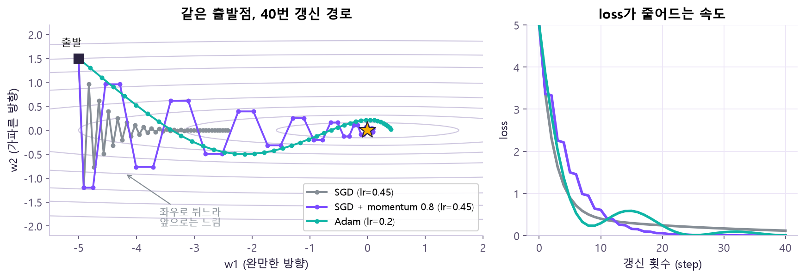
| 관점 | SGD + Momentum | AdamW |
|---|---|---|
| 쓰는 정보 | 현재 기울기 + 이동량 | 기울기 평균 + 제곱 평균 |
| 주요 설정 | lr · momentum · weight_decay | lr · betas · eps · weight_decay |
| 장점 | 구조 단순 · 해석 쉬움 | 초기 수렴이 빠른 경우가 많음 |
optimizer = torch.optim.SGD(model.parameters(), lr=0.05, momentum=0.9)
optimizer = torch.optim.AdamW(model.parameters(), lr=0.01, weight_decay=0.01)② 학습률과 Scheduler
| 학습률 | 모습 | 학습 곡선 |
|---|---|---|
| 너무 작음 | 작은 이동만 반복 | loss가 천천히 줄고, 정한 epoch 안에 덜 배움 |
| 적절함 | 안정적으로 접근 | loss가 빠르게 줄고 valid도 안정적으로 개선 |
| 너무 큼 | 최적점을 지나침 | loss가 진동하거나 발산, NaN |
예시(같은 조건 40 epoch): lr=0.0001은 안정적이지만 느리고(최소 valid loss ≈ 0.53), lr=0.01은 빠르게 줄고(≈ 0.12), lr=0.5는 초반에 크게 흔들려요. 좋은 학습률은 Optimizer · batch 크기 · 모델 · 정규화와 함께 정해져요. 정답 하나가 아니라 후보 범위를 정해 곡선으로 비교하는 하이퍼파라미터예요.
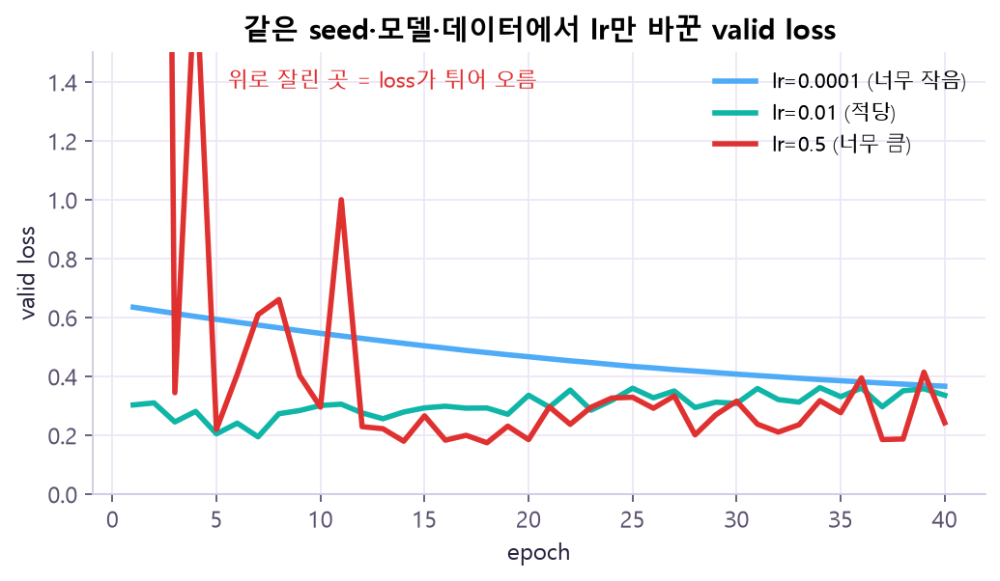
lr × 기울기예요. lr이 크면 한 번에 너무 멀리 뛰어 최적점을 지나쳐 반대편으로 가고, 거기서 또 크게 뛰면서 loss가 출렁이거나 점점 커져요(NaN까지). lr이 작으면 방향은 맞아도 보폭이 작아 정한 epoch 안에 도착을 못 해요. (Day9의 경사하강 체험에서 직접 볼 수 있어요.)학습률 문제를 의심할 수 있는 신호
| 보이는 신호 | 의심할 것 | 왜? |
|---|---|---|
| 초반부터 loss가 NaN 또는 매우 큰 값 | lr 과대 · 입력 스케일 · loss 구현 | 너무 큰 보폭이나 너무 큰 입력값이 숫자를 폭발시킴 |
| train loss가 거의 안 줄음 | lr 과소 · 기울기 단절 · Parameter 등록 여부 | 보폭이 작거나, 기울기가 파라미터까지 안 오거나, Optimizer가 그 파라미터를 모름 |
| loss가 위아래로 크게 진동 | lr 과대 · batch 너무 작음 · 데이터 이상 | 보폭이 크거나, 작은 batch의 기울기가 들쭉날쭉 |
| 초반 개선 후 후반 정체 | Scheduler 또는 Early Stopping 후보 | 처음 lr이 끝부분의 미세 조정엔 너무 큼 |
for lr in [0.0001, 0.01, 0.5]:
optimizer = torch.optim.AdamW(model.parameters(), lr=lr, weight_decay=0.01)Scheduler — 학습 중에 lr을 바꾸기
Optimizer는 파라미터를 갱신하고, Scheduler는 Optimizer가 쓸 lr을 조정해요. ReduceLROnPlateau는 valid 지표가 한동안 좋아지지 않으면(plateau = 평평한 고원) lr을 깎아요.
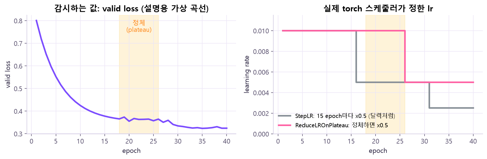
scheduler.step(valid_loss)처럼 값을 꼭 넣어야 해요.ReduceLROnPlateau 명령어 사전에서 자세히 →scheduler = torch.optim.lr_scheduler.ReduceLROnPlateau(optimizer, mode="min", factor=0.5, patience=4, min_lr=1e-4)
scheduler.step(valid_loss) # valid 후, 감시할 값을 넣어서!③ Batch · Iteration · Epoch
| 용어 | 뜻 |
|---|---|
| Batch size | 한 번의 forward/backward에 쓰는 샘플 수 |
| Iteration | batch 하나로 optimizer.step()까지 한 횟수 |
| Epoch | train 데이터 전체를 한 바퀴 다 본 단위 |
epoch당 iteration 수 = ⌈ 샘플 수 ÷ batch_size ⌉ (drop_last=False일 때)
예: 240건, batch_size=32 → 32×7 = 224건 + 마지막 16건 → 8 iterations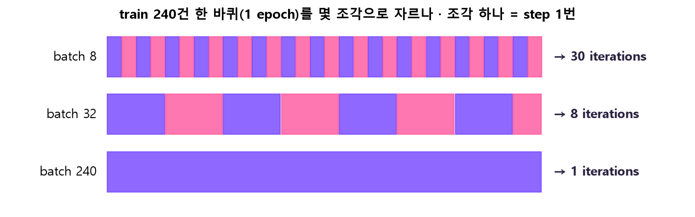
optimizer.step() 한 번이에요. batch 32 줄의 마지막 조각은 16건이라 짧아요. 🤔 왜? iteration 수 = ⌈240 ÷ batch_size⌉. batch가 작을수록 같은 데이터를 더 잘게 쪼개 더 자주 갱신하고, 크면 한 번에 많이 보고 적게 갱신해요.| 작은 batch | 큰 batch | |
|---|---|---|
| 기울기 | 흔들림 큼 | 안정적 |
| 메모리 | 적게 씀 | 많이 씀 (GPU 메모리 부족 주의) |
| epoch당 step 수 | 많음 | 적음 (한 step 계산량은 큼) |
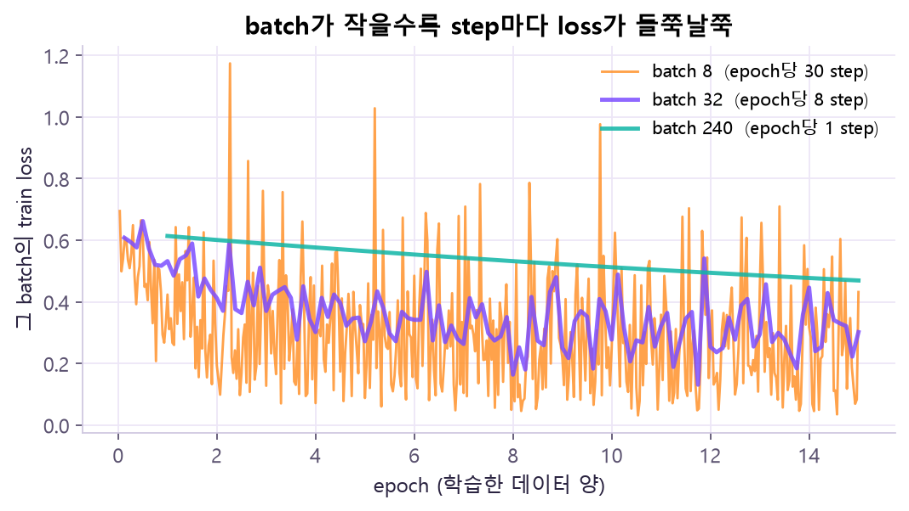
| 교재 설명 예시 · batch size | iteration / epoch | 최소 valid loss | 마지막 valid acc | 해석 |
|---|---|---|---|---|
| 8 | 30 | 0.102 | 0.925 | step 많음 · gradient 변동 큼 |
| 32 | 8 | 0.117 | 0.925 | 중간 크기 |
| 240 | 1 | 0.110 | 0.962 | full-batch · step 1회 |
(240건, 같은 model·optimizer·lr·epoch, batch_size 하나만 변경) 이 작은 예에선 차이가 크지 않았어요. 데이터·모델마다 달라지니 직접 기록해서 비교해요.
DataLoader 다시 보기 명령어 사전에서 자세히 →train_loader = DataLoader(train_dataset, batch_size=32, shuffle=True, drop_last=False)
valid_loader = DataLoader(valid_dataset, batch_size=32, shuffle=False)optimizer.zero_grad(set_to_none=True) # 이전 iteration의 gradient 제거
optimizer.step(closure=None) # 현재 .grad와 optimizer 상태로 갱신④ 과적합과 학습 곡선
과적합(Overfitting) = train만 너무 외워서 새 데이터에 약해진 상태예요. 최종 점수 하나로는 안 보이고, epoch별 train·valid 곡선을 같이 봐야 보여요.
| Underfitting | Good fit | Overfitting | |
|---|---|---|---|
| 모습 | train도 나쁨 | train·valid 함께 개선 | train 개선 · valid 악화 |
| 비유 | 공부를 덜 함 | 이해하며 공부함 | 문제집 답만 외움 |
예시: train 60건, hidden 64, 규제 없음 → valid loss 최저점은 약 13 epoch. 그 뒤 train loss는 계속 줄지만 valid loss는 다시 커져요. 마지막 epoch가 항상 최선은 아니에요. 모델 크기, epoch 수, 데이터 양, 노이즈, 규제 여부가 모두 과적합에 영향을 줘요.
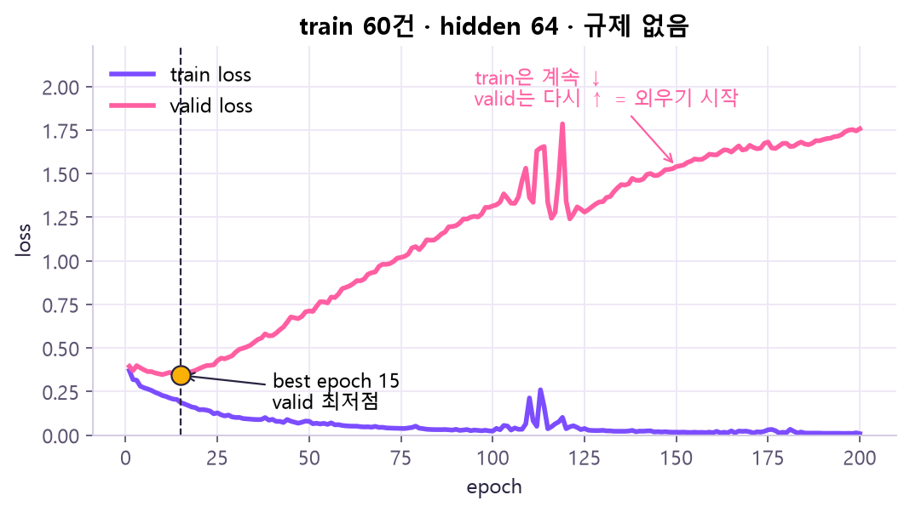
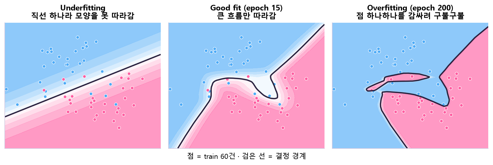
| 곡선 패턴 | train loss | valid loss | 가능한 원인 | 우선 점검 |
|---|---|---|---|---|
| 둘 다 높음 | 높거나 천천히 감소 | 높거나 천천히 감소 | Underfitting · lr 과소 | 모델 · lr · 학습 시간 |
| train↓ valid↑ | 계속 감소 | 최저점 후 증가 | Overfitting | Early Stopping · 규제 · 데이터 |
| 둘 다 진동 | 큰 폭 변동 | 큰 폭 변동 | lr 과대 · batch 과소 | lr · batch · 입력 스케일 |
| NaN 발생 | NaN | NaN | 수치 불안정 · 잘못된 loss | 입력 · lr · gradient norm |
history["valid_loss"].append(valid_loss)
best_epoch = history["valid_loss"].index(min(history["valid_loss"])) + 1torch.manual_seed() 명령어 사전에서 자세히 →torch.manual_seed(42) # PyTorch 난수 순서 고정⑤ Dropout과 BatchNorm — train/eval에서 다르게 동작하는 층
둘 다 모델 안에 들어가는 층이에요. 흔한 배치 예: Linear → BatchNorm → ReLU → Dropout → 다음 층
model.eval() 한 줄로 이 두 층만 바꿔요.Dropout — 일부 연결을 잠깐 끄기
확률 p로 0→ 남은 값 키우기
× 1/(1−p)→ 다음 층
학습할 때 뉴런 일부를 무작위로 꺼서, 모델이 특정 특징 하나에만 기대지 않게 해요. 남은 값을 1/(1−p)배 키워서 평균 크기를 맞춰요(scale 보정). 평가(eval) 땐 아무것도 안 끄고 그대로 통과시켜요.
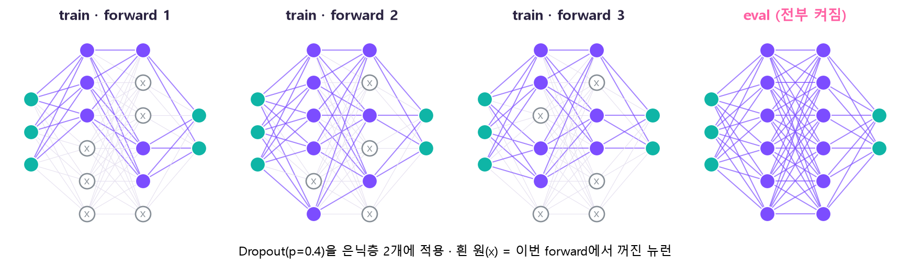
🤔 왜 남은 값을 키워? — 평가 땐 전부 켜니까, 학습 때 일부만 켜진 상태와 다음 층이 받는 값의 평균 크기가 같아야 해요. 그래서 학습 때 남은 값을 1/(1−p)배 해 둬요. 아래 체험에서 출력 평균이 입력 평균 근처에 머무는 걸 보세요.
nn.Dropout(p) 명령어 사전에서 자세히 →nn.Linear(2, 64), nn.ReLU(), nn.Dropout(p),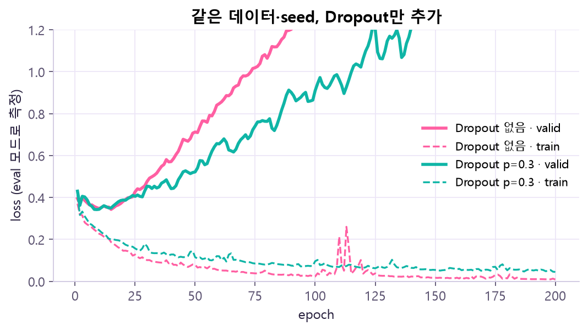
nn.Dropout(0.3)만 추가했어요(seed·데이터·Optimizer 같음, 측정은 eval 모드). 초록 valid loss가 분홍보다 천천히 올라가고, 초록 train loss는 0에 덜 붙어요. 하지만 초록도 결국은 올라가요. 🤔 왜? 일부를 끄면 train을 완벽히 외우기 어려워져서(train loss가 덜 내려감) 외우는 속도가 늦어져요. 다만 데이터가 60건뿐이면 Dropout 하나로는 다 막지 못해요 — 그래서 아래 Weight Decay·Early Stopping과 함께 쓰고, 효과는 늘 이렇게 곡선으로 확인해요.BatchNorm — batch 통계로 중간값을 정리
층을 지날 때마다 값의 분포가 들쭉날쭉하면 학습이 불안정해요. BatchNorm은 현재 batch의 평균·분산으로 값을 정리해서 학습을 원활하게 해요. 규제 효과가 조금 있을 수 있지만 본래 목적은 중간 activation의 분포 안정화예요. 학습 중엔 현재 batch 통계를 쓰면서 running_mean·running_var(누적 통계)도 갱신해요.
🤔 왜 eval 땐 running 통계를 써? — 평가·서비스에선 샘플이 1개만 들어올 수도 있고, 같은 입력이면 같은 답이 나와야 해요. batch 통계를 쓰면 함께 들어온 다른 샘플에 따라 결과가 바뀌니까, 학습 동안 모아 둔 고정 통계를 써요.
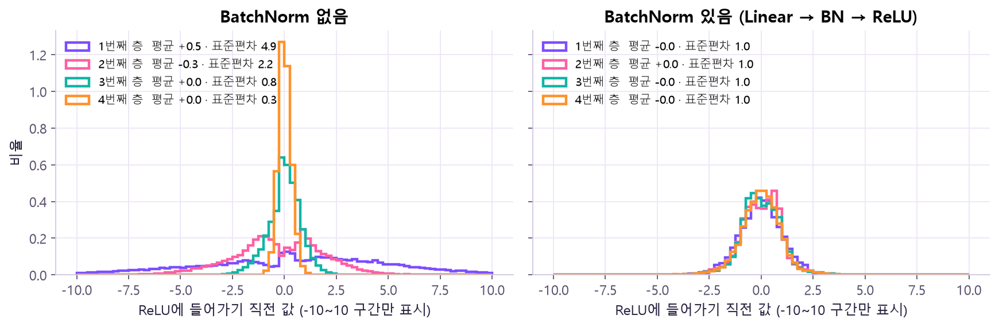
model.train() | model.eval() | |
|---|---|---|
| Dropout | 켜짐 (무작위로 끔) | 꺼짐 (그대로 통과) |
| BatchNorm | 현재 batch 평균·분산 사용, running 통계 갱신 | 저장된 running_mean·running_var 사용, 갱신 없음 |
nn.BatchNorm1d() 명령어 사전에서 자세히 →nn.Linear(2, 64), nn.BatchNorm1d(64), nn.ReLU(),model.train() # 학습 모드 (= train(True))
model.eval() # 평가 모드 (= train(False))⑥ Weight Decay와 Early Stopping
Weight Decay — 큰 가중치에 벌점
가중치가 지나치게 커지는 걸 막아서 모델이 데이터를 과하게 외우지 않게 해요.
| weight_decay 동작 | |
|---|---|
| SGD | 기울기에 L2 형태의 항을 더해서 갱신 |
| AdamW | 적응적 갱신과 분리해서 파라미터를 직접 감쇠 |
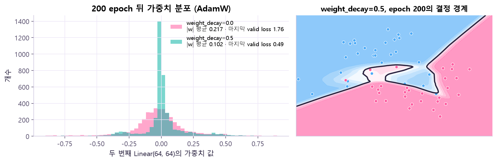
weight_decay만 0 vs 0.5로 바꿔 200 epoch 학습한 뒤, 두 번째 Linear(64, 64) 가중치 4096개의 분포예요. 초록(0.5)은 0 근처에 뾰족하게 몰리고 평균 크기 |w|가 0.217 → 0.102로 절반이 됐어요. 마지막 valid loss도 1.76 → 0.49. 오른쪽 경계는 epoch 200인데도 과적합 그림보다 덜 구불구불해요. 🤔 왜? AdamW는 매 step 가중치를 조금씩 0 쪽으로 끌어당겨요. 그래서 꼭 필요한 가중치만 크게 남고 나머지는 작아져, 점 하나하나를 감싸는 뾰족한 경계를 만들기 어려워져요. (0.5는 차이를 보이려고 일부러 크게 준 값이에요 — 실제로는 후보를 valid로 비교해 골라요.)🤔 왜 AdamW는 "분리"해? — Adam은 파라미터마다 보폭을 자동 조절하는데, weight decay를 기울기에 섞어 넣으면 그 감쇠도 같이 조절돼 버려서 파라미터마다 감쇠 세기가 들쭉날쭉해져요. AdamW는 감쇠를 적응적 갱신과 따로 적용해서 의도한 만큼 고르게 줄여요.
{"params": decay, "weight_decay": 0.01},
{"params": no_decay, "weight_decay": 0.0},Early Stopping — 좋아지지 않으면 멈추고 best로 되돌리기
| 변수 | 뜻 |
|---|---|
best | 지금까지 가장 좋은 valid 지표 |
patience | 개선 없이 기다려 줄 epoch 수 |
min_delta | "개선"으로 인정할 최소 변화량 |
best_state | 가장 좋았던 시점의 model.state_dict() 복사본 |
예시 (patience=3, min_delta=0): valid loss 0.65 → 0.50 → 0.42 → 0.45 → 0.47 → 0.46. 3 epoch에 best 저장, 4·5·6에서 대기 1·2·3회 → 6 epoch에 중단 → 3 epoch 상태로 복원.
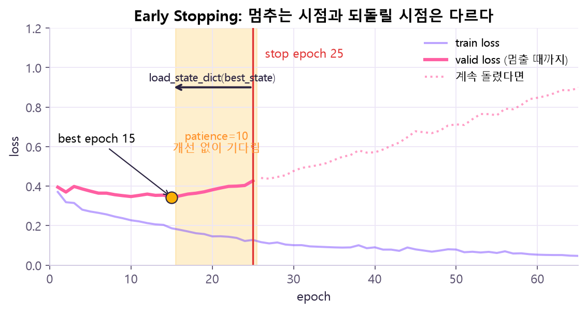
load_state_dict(best_state))가 세트예요. 강의 예시(best 13 · stop 25)와 같은 구조예요.state_dict를 저장해 뒀다가 복원해요. 감시는 train이 아니라 valid로 해요 — train은 학습에 직접 쓰여서 거의 항상 계속 좋아지니 기준이 될 수 없어요.설명용 가상 곡선에서 patience와 min_delta를 바꿔 보세요. (실제 실험값이 아니에요)
best_state = copy.deepcopy(model.state_dict())
model.load_state_dict(best_state) # 멈춘 시점이 아니라 best로!네 기법 비교
| 기법 | 무엇을 바꾸나 | train/eval 차이 | 주요 설정 | 주의 |
|---|---|---|---|---|
| Dropout | activation 일부를 무작위로 0 | 있음 | p | p 과대 → Underfitting |
| BatchNorm | 중간 activation 정규화 | 있음 | num_features, momentum | 작은 batch, 모드 전환 |
| Weight Decay | 파라미터 크기 억제 | 없음 | weight_decay | 과대 → train 성능 저하 |
| Early Stopping | 학습 epoch 수 제한 | 선택 과정 | patience, min_delta | best state 복원 필수 |
증상으로 진단
먼저 물어볼 것: ① train과 valid 중 어디가 문제? ② 초반부터인가, 후반부터인가? ③ loss와 accuracy가 같은 결론인가? ④ 한 설정만 바꿨나?
| 관찰한 곡선 | 가능한 원인 | 먼저 해 볼 것 | 추가 확인 |
|---|---|---|---|
| train·valid 둘 다 높음 / 천천히 감소 | Underfitting, lr 과소 | 모델 용량·lr·epoch 늘리기 | 데이터·loss·기울기 |
| train↓ valid는 최저점 후 ↑ | Overfitting | Early Stopping · Dropout · Weight Decay | 데이터 양, 라벨 노이즈 |
| 둘 다 크게 진동 | lr 과대, batch 과소 | lr 낮추기 · batch 키우기 | 입력 정규화(스케일) |
| 초반 개선 후 정체 | plateau | Scheduler · 다른 Optimizer | 기울기 크기, 활성화 |
| loss가 NaN / Inf | 수치 불안정 | lr 낮추기 · 입력·loss 검사 | gradient clipping, dtype |
| train loss가 거의 안 줄음 | lr 과소, 기울기 끊김 | lr 키우기 | 파라미터가 Optimizer에 등록됐나 |
| GPU 메모리 부족(OOM) | batch가 너무 큼 | batch 줄이기 | gradient accumulation |
| 실행마다 valid 결과가 다름 | eval 누락, seed, shuffle | model.eval() 확인 | test를 반복 확인하진 않기 |
| BatchNorm 결과가 이상함 | batch 너무 작음, 모드 착각 | batch 크기·train/eval 확인 | drop_last |
원본 자료
- 강의:
Day10_Optimizer_Regularization_20261030_v2.pdf— 큰 그림 p2–11 · Optimizer p17–25 · 학습률·Scheduler p27–35 · Batch·Epoch p38–45 · 과적합·학습 곡선 p48–54 · Dropout·모드 p57–64 · BatchNorm·Weight Decay p67–74 · Early Stopping p77–81 · 오류 처방 p82·p86–87 - 공식 문서: torch.optim (SGD · AdamW · lr_scheduler) · nn.Dropout · nn.BatchNorm1d · DataLoader